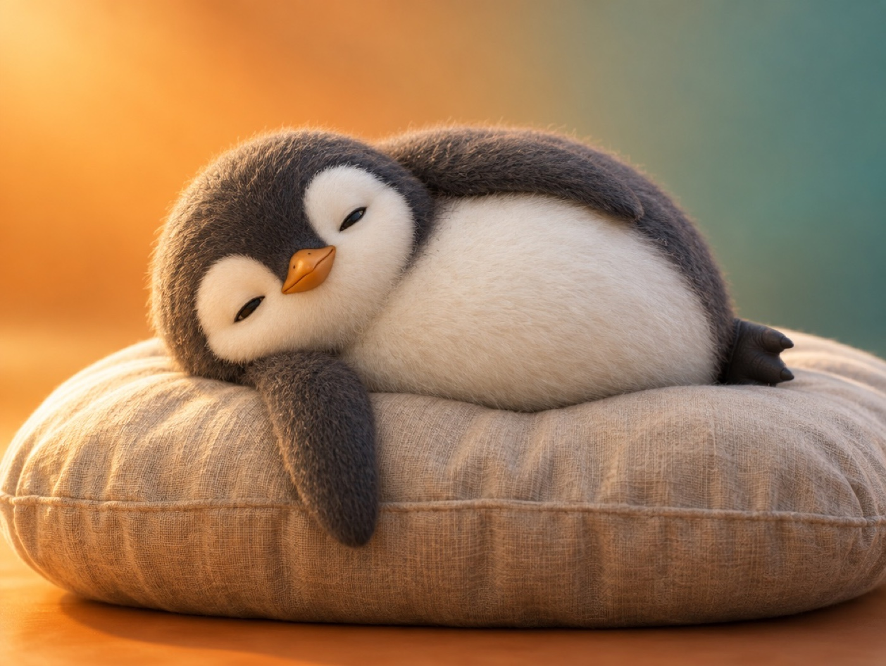

📝 DRAFT · 下書き — まだ本番に出していません · 下書き一覧
🐧 EVERYDAY LIFE⚡ 15 SEC
Feeling lazy is natural because your brain wants to save energy 🦁

The Zoo Lion
It seems lions at the zoo laze around all day, except at feeding time.
Brain Logic
To save energy, your brain decides "lazing around = good."
⚡ TRY IT
Can you wake up the lion?
1 zoo day = 15 seconds. Tap to wake him up. When does he move?
Press start. The zoo day begins!
Zzz… save energy…
Nope. What a bother… 💤
FOOD!! I'm up! 🍖
Good night. Zzz…
😴 Ignored:0
🍖 Moved:0
😴 Lazy time: 100%
🏆 Perfect zookeeper! He moved only for food.
🍖 He moved only for food. The rest of the day? Zzz.
😴 He slept all day. Lazy is normal, even for a king!
🧠 Your brain is the same. It wants to save energy first.
Not Your Fault
So when you feel "what a bother," you are not lazy; it is just instinct.
Use Systems
So moving with "systems" works better than willpower.
📚 I learned this from the Japanese blog "Panda no Ondo".